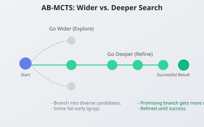

I kept seeing the phrase “inference‑time scaling” and it sounded vague. People say “just sample more” or “use search,” but that never felt concrete. Then I found a paper called “Wider or Deeper? Scaling LLM Inference‑Time Compute with Adaptive Branching Tree Search.” It finally made the idea feel real.
This post is me trying to understand what it actually does and why it matters.
The problem it tries to solve
Sampling multiple answers from an LLM is effective, but it wastes compute in a dumb way.
If you generate 20 answers, you do not reuse what you learned from answer 1 when you generate answer 2. Every sample is independent. If you have feedback signals like unit tests or compile errors, you want to use them, not ignore them.
So the question becomes: How do you spend your inference budget more intelligently?

Figure 1: AB-MCTS intelligently decides whether to branch "wider" for diverse ideas or go "deeper" to refine a promising one.
The core idea
You can use a tree search to decide where to spend compute:
- Go wider when you need diversity. This means branching into new candidate answers.
- Go deeper when a candidate looks promising. This means refining, revising, and improving a candidate answer.
AB‑MCTS is a system that adapts between those two options based on feedback.
A quick mental model
Think of each node in the tree as a partial solution. At each step you can:
- Expand to a new branch (go wider).
- Refine the current branch (go deeper).
AB‑MCTS decides which one to do using a score. The score is based on external feedback, not just the model’s own confidence. This is important in coding tasks where you can run tests and know if something is actually working.
So instead of “sample 20 answers,” you do something more like this:
- Sample a few initial ideas.
- Test them with an evaluator (e.g., run unit tests).
- Expand on the promising ones that pass the tests.
- Keep doing that until your compute budget is used up.
Why it feels important
This idea will show up everywhere for students. It is a clean way to turn “give the model more time” into a real algorithm.
Also, it is simple enough to plug into workflows where you already have evaluators, like:
- Unit tests
- Compile checks
- Symbolic verifiers
- Constraint solvers
If you can score it, you can search it.
What the paper claims
From the abstract:
- AB‑MCTS outperforms repeated sampling.
- It also beats standard Monte Carlo Tree Search (MCTS).
- The gains are clearest on coding and engineering tasks.
That makes sense because those tasks provide clean, reliable feedback signals.
What confused me at first
I thought sampling more was basically the same thing as search. It is not.
Sampling gives you diversity, but it does not give you a strategy for using feedback. Tree search does. That is the mental shift.
What I took away
- Inference‑time scaling is real, but naive sampling is wasteful.
- If feedback exists, you should structure the search to use it.
- AB‑MCTS is a practical recipe for that structure.
I expect this to become a standard baseline in the future.
If I got anything wrong, please correct me. I am still learning and want to understand this properly.
← Back to home